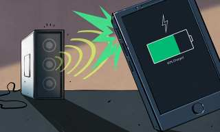
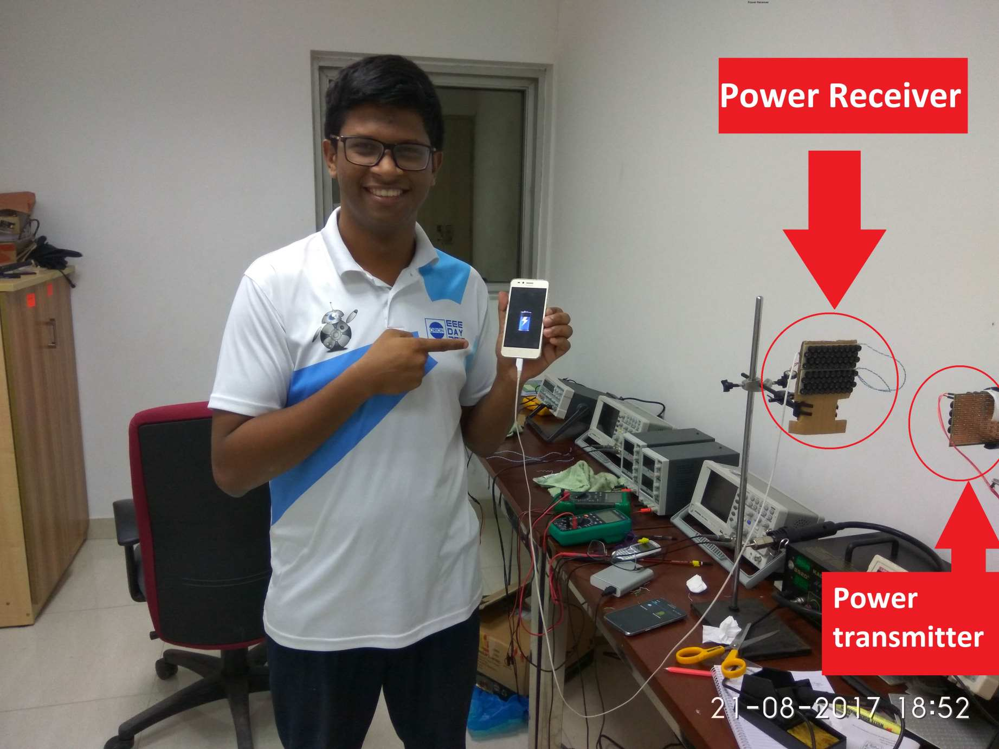
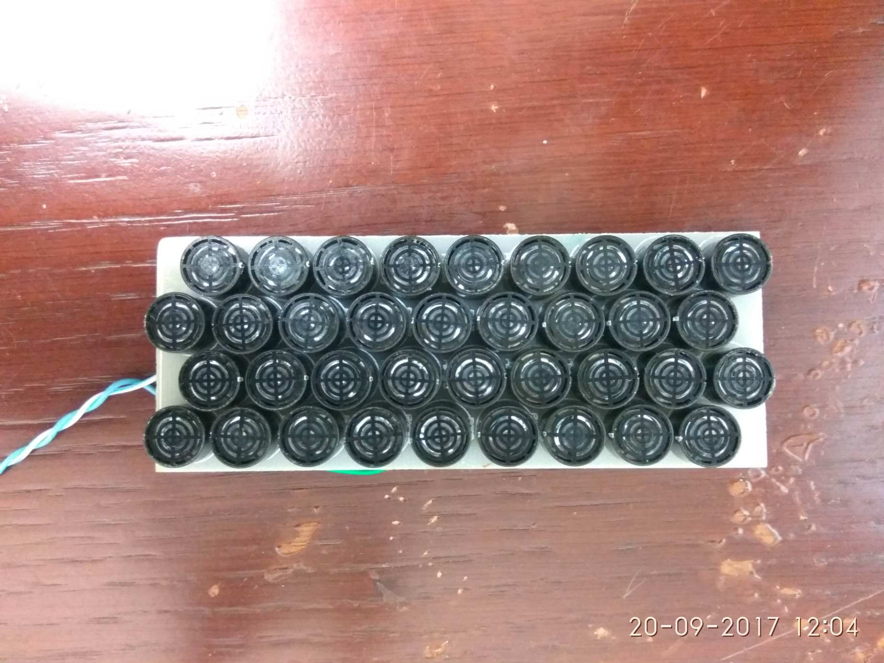
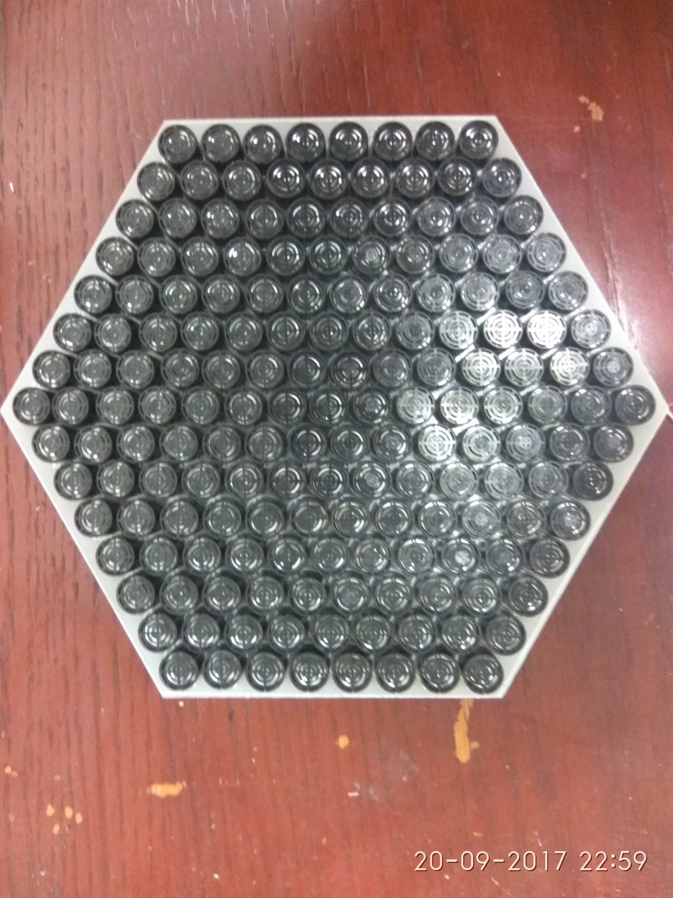
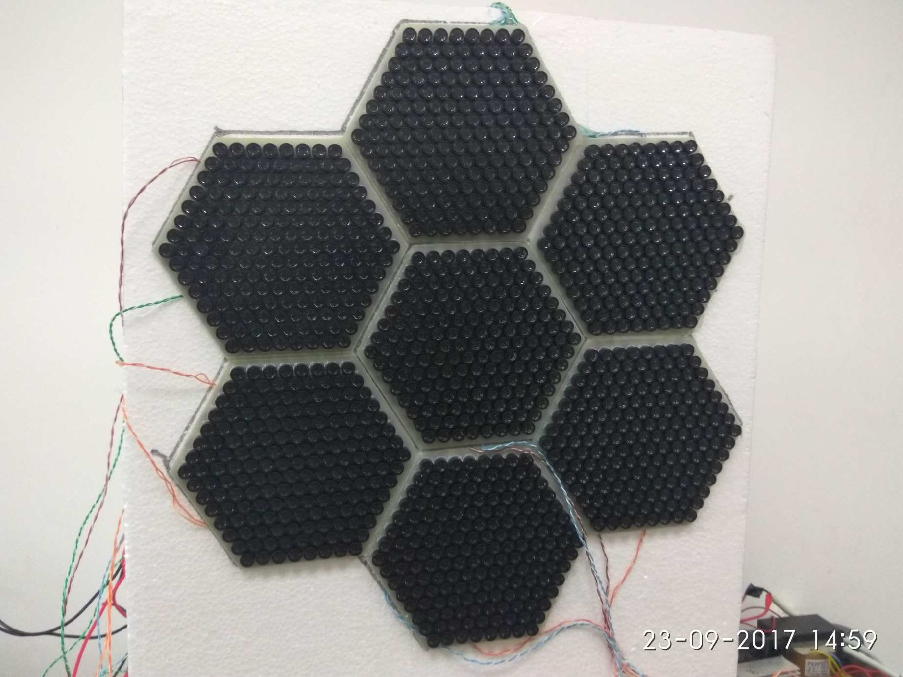
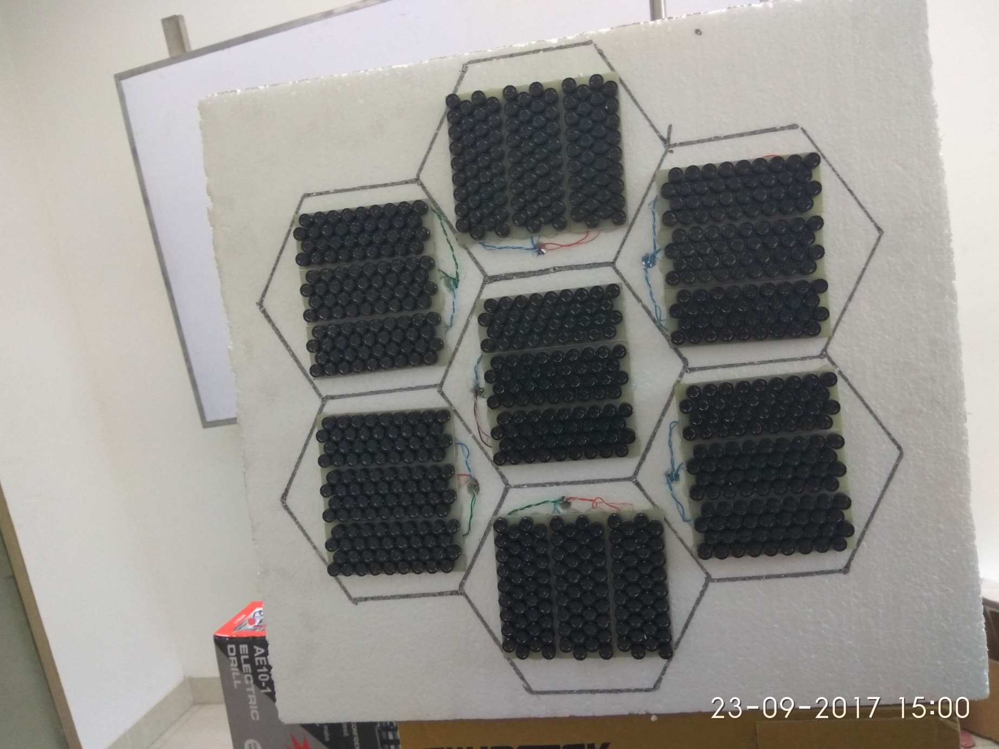
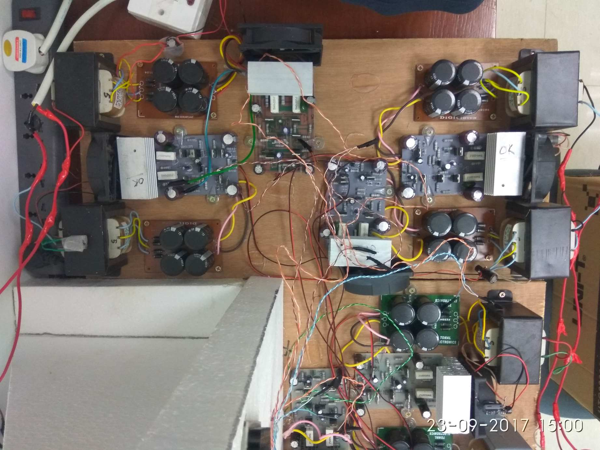

ABOUT THE PROJECT
Wireless power transfer for IoT devices is must for our coming technological world, it’s a hassle to wire up the power cable for the devices those we are going to use the most of our daily life, now as we know our mobile phone is the most power full IoT device that we use most. At Samsung Research & Development, Bangladesh, some visionary people Anwarul Haque, Mahabubul Anam and some other think to solve that issue, they got a brilliant idea to solve the problem, they use ultrasonic technology to solve this problem, they got an A1 US Patent on this topic. I and one of my Fellow Engineer Shimanto Chowdhury were appointed to make a POC (Proof Of Concept) on that topic. Our goal was to get 1-watt Power by the distance of 5 feet between Transmitter and Receiver. After 3 month of hard work we got 640 m Watt power at the distance of 3 feet.

Shimanto enjoying the first charging stat of a mobile through wireless ultrasonic power.

Single block power Receiver

Single block power Transmitter

Full block Transmitter

Full block Receiver
